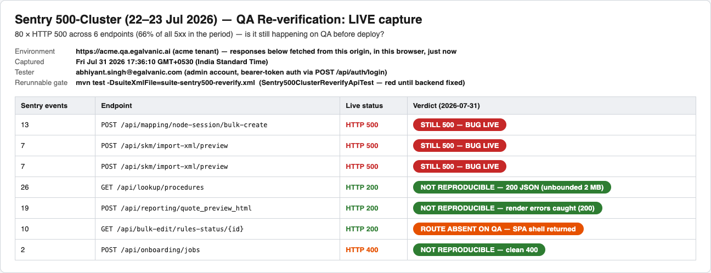
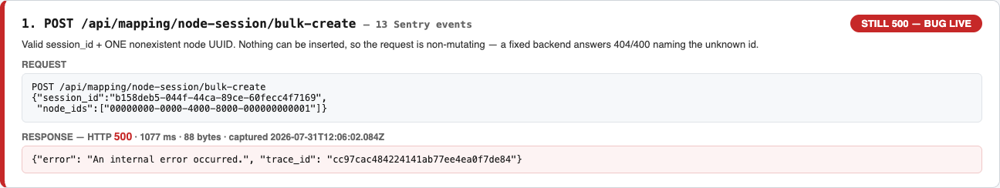
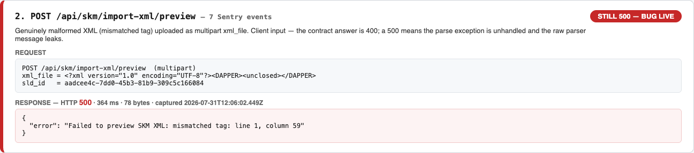
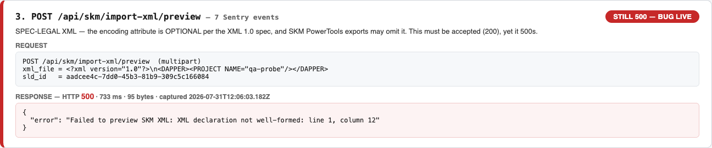
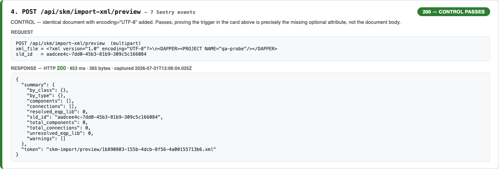
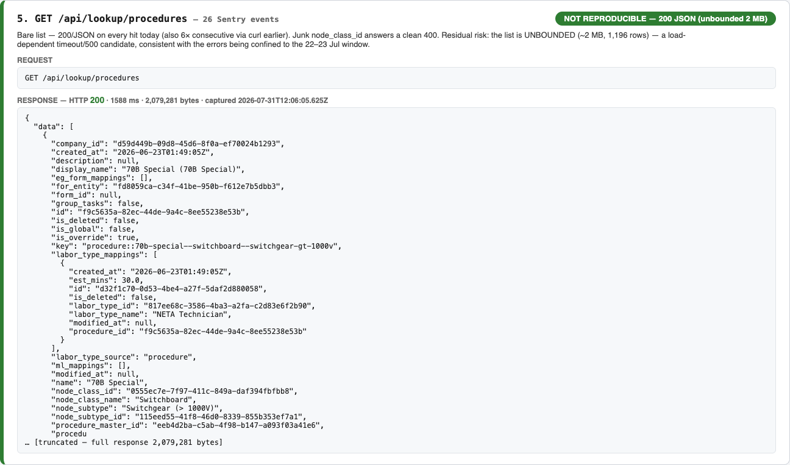
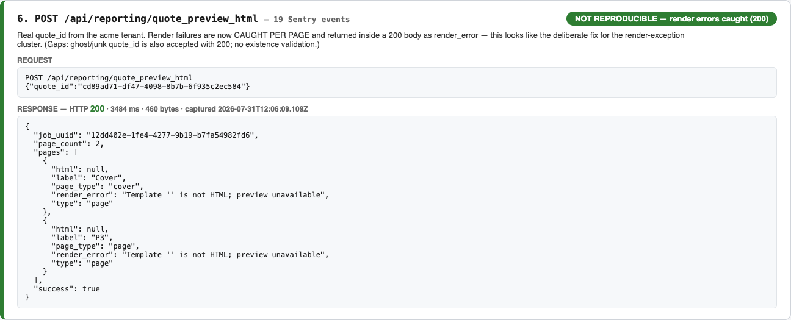
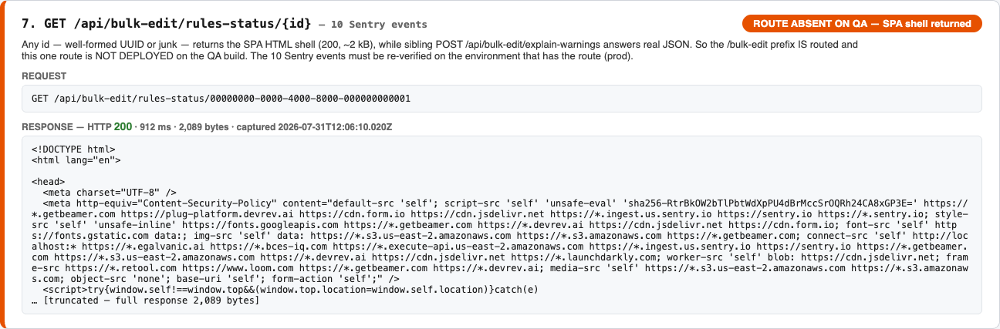
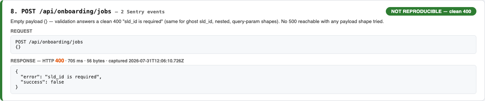

Sentry 500-Cluster (22–23 Jul 2026) — QA Re-verification
80 × HTTP 500 across 6 endpoints (66% of all 5xx in the period). Action item: "Verify fixes in QA before deploying — check this issue is coming or not."
VERDICT: 2 of 6 endpoints STILL return 500 on QA (deterministic) — POST /mapping/node-session/bulk-create and POST /skm/import-xml/preview (two distinct triggers). 3 endpoints are clean today; GET /bulk-edit/rules-status/{id} cannot be verified because the route is not deployed on the QA build.
Summary — all six endpoints at a glance

Live status per endpoint, captured 2026-07-31. Red = bug still live; green = not reproducible / fixed; orange = route absent on QA.
1 — POST /api/mapping/node-session/bulk-create (13 events) — STILL 500

Valid session_id + one nonexistent node UUID → HTTP 500 with trace_id. Deterministic: 4/4 runs today (curl ×3: trace_ids d908012d…, 42eb8478…, 3ad96f96…; browser: cc97cac4…). Malformed bodies DO get clean 400s — only the unknown-id path is unhandled. Expected: 404/400 naming the unknown id.
2 — POST /api/skm/import-xml/preview (7 events) — STILL 500, trigger A: malformed XML

Client-supplied malformed XML answers HTTP 500 and leaks the raw parser message ("mismatched tag: line 1, column 59"). Contract answer is 400 with a user-safe message.
3 — POST /api/skm/import-xml/preview — STILL 500, trigger B: spec-legal XML rejected

<?xml version="1.0"?> without the OPTIONAL encoding attribute is legal XML 1.0 — SKM PowerTools exports may omit it — yet it answers HTTP 500. This rejects valid customer files, not just bad ones.
4 — Control: identical document WITH encoding="UTF-8" — passes

Same document body, only the encoding attribute added → HTTP 200 preview summary. Proves the trigger in §3 is precisely the missing optional attribute.
5 — GET /api/lookup/procedures (26 events) — NOT reproducible

200/JSON on every hit today (6× consecutive via curl + this capture); junk node_class_id → clean 400. Residual risk: unbounded ~2 MB / 1,196-row response — a load-dependent 500/timeout candidate, consistent with errors confined to the 22–23 Jul window.
6 — POST /api/reporting/quote_preview_html (19 events) — NOT reproducible (appears fixed)

Render failures are now caught per page and returned inside a 200 body as render_error — the likely fix for the render-exception cluster. Follow-ups: ghost/junk quote_id is accepted (no existence validation); one 67.7 s validation response observed once via curl.
7 — GET /api/bulk-edit/rules-status/{id} (10 events) — route ABSENT on QA build

Any id returns the SPA HTML shell (the <!DOCTYPE html> visible in the response pane) while sibling POST /bulk-edit/explain-warnings answers JSON — the prefix is routed, this one route is not deployed here. Re-verify on prod / after it ships.
8 — POST /api/onboarding/jobs (2 events) — NOT reproducible

Clean 400 "sld_id is required" on every payload shape tried (empty, ghost sld_id top-level / nested / query-param). No 500 reachable.
Copy-paste repros for the two live bugs
TOKEN=$(curl -sk -X POST https://acme.qa.egalvanic.ai/api/auth/login \
-H 'Content-Type: application/json' \
-d '{"email":"<AppConstants.VALID_EMAIL>","password":"<AppConstants.VALID_PASSWORD>","subdomain":"acme"}' \
| python3 -c 'import json,sys;print(json.load(sys.stdin)["access_token"])')
# BUG 1 — bulk-create: nonexistent node UUID → 500 (expect 400/404)
curl -sk -X POST https://acme.qa.egalvanic.ai/api/mapping/node-session/bulk-create \
-H "Authorization: Bearer $TOKEN" -H 'Content-Type: application/json' \
-d '{"session_id":"b158deb5-044f-44ca-89ce-60fecc4f7169","node_ids":["00000000-0000-4000-8000-000000000001"]}'
# BUG 2a — SKM preview: malformed XML → 500 + raw parser message (expect 400)
printf '<?xml version="1.0" encoding="UTF-8"?><DAPPER><unclosed></DAPPER>' > /tmp/broken.xml
curl -sk -X POST https://acme.qa.egalvanic.ai/api/skm/import-xml/preview \
-H "Authorization: Bearer $TOKEN" \
-F 'xml_file=@/tmp/broken.xml;type=text/xml' -F 'sld_id=aadcee4c-7dd0-45b3-81b9-309c5c166084'
# BUG 2b — SKM preview: LEGAL declaration without encoding attr → 500 (expect 200)
printf '<?xml version="1.0"?>\n<DAPPER><PROJECT NAME="qa-probe"/></DAPPER>\n' > /tmp/noenc.xml
curl -sk -X POST https://acme.qa.egalvanic.ai/api/skm/import-xml/preview \
-H "Authorization: Bearer $TOKEN" \
-F 'xml_file=@/tmp/noenc.xml;type=text/xml' -F 'sld_id=aadcee4c-7dd0-45b3-81b9-309c5c166084'